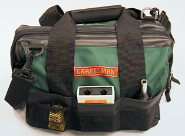
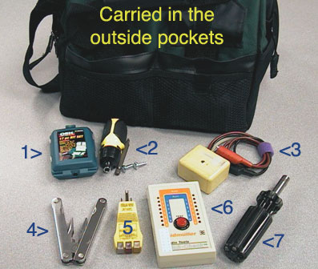
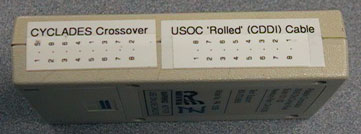
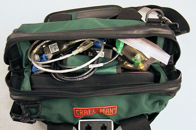
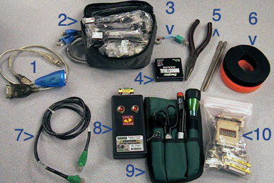
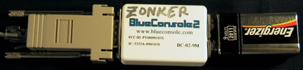
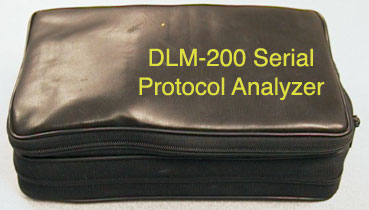
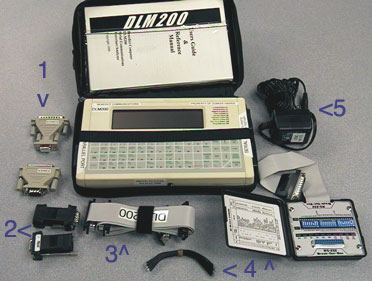

|
|
www.conserver.com |
|
|
www.conserver.com |
As I've worked in different networks, I've worked with various terminal servers and console servers. Each vendor had a different RJ-45 wiring format, so each shop had a different collection of adapters from RJ-45 to DB9 and DB25. I used to keep a collection of these adapters at my desk, so I would always have a couple of each (in case someone had used the last of the adapter I needed to finish a particular project). I also had my troubleshooting tools to carry.
Initially, I used small, zippered bags. The best I had found were for the Telebit Q-Blazer modem. Measuring about 2" x 3" x 4", with a large, sturdy velcro straps in back, to hold the modem kit to the strap of your laptop bag, these became my main storage device. I managed to get a dozen of these, and I used one for my Cisco adapters, one for my Annex adapters, one for my troubleshooting tools, and another for assorted serial gender changers and DB9-to-DB25 adapters. This was useful for many years.
In the summer of 2004, I bought a serial protocol analyzer, and this was very useful. As a result, I was carrying this everywhere. It came in its own pouch, with a pocket for its AC power adapter, cables, and serial adapters. I decided I needed something to carry the analyzer, some key tools, and my troubleshooting tools. The analyzer was the main object that would drive the size choice.
I tried luggage shops, laptop bags, tool cases, and even plastic storage tubs, but none of them were a good size fit, and most were too bulky to carry easily. But I was always keeping one eye out for the Right Bag. I finally found it at Orchard Supply Hardware, while looking for leather work gloves.
|
I like green, generally. And I don't mind the brand being embroidered in bright red, since I consider myself to be a 'craftsman' in the art of serial communications. This is a sturdy bag, with exterior pockets (short pockets, and even some mesh pockets...notice the AC Power Tester in the lower left of the picture) and deeper interior pockets. There is also a stiffened edge around the zippered opening, like your classic M.D.'s "doctor's bag", which will hold the bag open wide when the zipper is opened (which makes it easy to use both hands to get things in and out of the bag!). I use the outside pockets for the tools that I need the most often, and the tools that I need quickly, such as the AC power/ground tester, RJ-45 cable continuity tester, and a few small hand tools. |
 |
Here's what I currently carry in the outside pockets;
|
 |
|
|
The Paladin Patch-Check(tm) cable continuity checker is one of my mainstay tools. I use it to tell me if a cable is wired the way that I expect it to be. I made some labels that detail the end-to-end wiring for some 'specialty' cables, and I attached them to the continuity checker for quick reference. (I have a set of matching stickers inside the case of my AMP cable making toolkit, but I don't carry that crimping kit in this bag.) |
 |
This continuity checker has saved me so many times, by spotting a short, an intermittent open, or a mis-wired cable. I don't need to 'certify' a cable for CAT-5 compatability, but I do need to know where the wires are going.
Another use for this device is to tell me the end-to-end wiring when I've got a working chain of cables and adapters! So many devices with an RJ-45 serial port will have a specialty cable, RJ-45 to some DB-type adapter...but it wasn't long enough, or it was the wrong DB connector, or the wrong DCE/DTE signalling...so, other adapters or cables were needed to make a connection work. In these cases, I'll unplug the two ends, and use this tracer to show me the pinout from one RJ-45 to the other.
For cases where there is an RJ-45 to a DB-type connector, I can still use this tracer, and a single trusted RJ45-to-DBx adapter and one ethernet cable to test the cable. (I already know the ethernet cable is a 'straight-through' cable, and I already know where all eight signals on the ehternet cable will wind up when they pass through the DB adapter). Then, all I need to do is use the tracer to put a signal on each wire, and then read what wire(s) receive the signal coming back into the continuity checker! Write it all down in my notebook, and I've documented another cable without resorting to surgery.
(I've also added a 'simpler' CAT-5 continuity checker, which is a master-and-remote type, for longer cable runs. This one only shows me green LEDs for the four pairs, but it does confirm of the cable is straight-through AT&T 468B.)
|
 |
The interior pockets of the bag hold other tools that I might need less often, or that are too big/tall for the exterior pockets. In the main compartment, I keep my 'kits', including the DLM-200 serial protocol analyzer, a small flashlight, spare batteries, and a belt-pouch with assorted tools and some permanent markers. On the top of everything else, and easy to grab, are my USB RS-232 serial adapters, a trusted crossover ethernet cable, and my passive signal tracers. The flashlight and the tool pouch are also standing up, so they are easy to grab without unpacking the bag. |
Here's a look at everything that I carry inside the main
compartment...
|
 |
I carry two USB serial dongles, bacause they show up (by default) as different COM ports on a PC. If one isn't recognized by a given machine, the other one might be. If I decide I don't trust one, I have a 'second opinion' in my bag. The dark grey device is an IO Gear GUC232A, which has a single yellow LED that indicates TD activity (from USB to serial). The blue devices is something I found on the ScannerSoft website, and it has two LEDS, to indicate both TD and RD activity. You can purchase the blue device (model USBG-232), from www.USBGear.com.
|
Late in 2007, I broke down to buy a couple BlueConsole
bluetooth serial devices. These let me use my Treo 650 phone as a
terminal (using the TriConnect
software) with a bluetooth link to the BlueConsole device. I
have one DE9M and one DE9F, and a Cisco-wired RJ45 on the way. The DE9M
unit is shown here with 9-volt battery, and a Cisco DE9F adapter.  |
Which serial adapter kit I carry largely depends on what type
of Console
Server I need to service. These days, I'm frequently connecting folks
to Cyclades devices. I've bought some 1-foot and 3-foot CAT-5 cables
from APA Cables &
Networks,
specifying blue boots on grey cable, so that these cables stand out
from the crowd (because they are wired as Cyclades Crossover cables,
so I have a quick 'null-modem' connection if I don't have the right
Cyclades adapter in my bag).
I have similar bags for Cisco, Annex/Bay, a full-blown Bay Networks collection, a Xyplex/iTouch/MRV bag, and an IOLAN bag, as well as a few with Apple LocalTalk, a Q-Blazer modem, and assorted serial adapters.
The black cable with the green boots is my 'trusted' crossover ethernet cable (because all 'crossover' ethernet cables are NOT wired the same, as my continuity checker will confirm!). The color scheme was chosen at Synopsys, to make the crossover cables stand out in a crowd. You can also see the white bands near the boots. The bands are laminated labels, with a combination part number and serial number, making it really easy to be sure that you are tracing the correct cable on a long run. This cable is 3-feet long, but I pay a bit more to get all of the cables with a serial number label.
Stealth Ports? Sometimes a port won't show you its signals until it sees something else conencted to it. This box helps me coax a shy port into revealing itself. It is home-built, and battery-powered. I use this in combination with a DB-9 passive RS-232 signal tracer to check the signals on stealth ports.
Passive signal tracers are a must-have. I use them to confirm that my adapters and cables are correct, because I start with a base of knowledge (see my Minor Scroll of Console Knowledge). Normally, I don't need a Break-Out Box, or the ability to change the leads of an adapter in the field. I also carry a collection of gender changers and adapters, only for troubleshooting. When you need to get the connection working, and you may not have the correct adapter in sufficient quantities, sometimes you need to be able to pull a rabbit out of your hat.
(Not shown here are a few spare, unwired DB-9 male and female RJ-45 adapters. Once in a while, I need to wire up something special, and these can be invaluable, saving me a trip to Fry's after hours, when building access might be a problem.)
As a rule, I hate chaining extra adapters together. They become another potential point of failure (disconnect, or intermitent). The added weight can bend the contacts on the connected equipment, making them intermitent. The extra size can make the adapter chain stick out farther from the equipment, making it more vulnerable to coming in contact with someone working near the equipment (resulting in some amount of breakage). As a long-term solution, you should put in a single cable, with the proper connectors, and screw the connectors down when you have that option.
That said; for the short term, sometimes you need to 'fudge', in order to make it work in a short amount of time. I've bought a variety of small (read: lightweight, and low profile) adapters for this task. They minimize the risks above, and let me get the connection working. BUT, when the connection is working, I also then know what parts are really needed to do the job correctly, and I know what the end-to-end conenctions of the cable need to be, so I can make an appropriate cable (or acquire the correct adapters) and schedule a time to swap the correct parts or cable in, and retrieve my adapters.
|
 |
Also in the main compartment of my Doctors Bag is my Serial Protocol Analyzer bag. This is a model DLM-200, from Benedict Computing, in Menlo Park, CA. The lower compartment houses the protocol analyzer, while the upper pouch carries all of the extra parts that came with it. I didn't expect to buy a full-featured tool like this. However, I'm quite happy with this purchase. Because I have some of the extra features in a portable, stand-alone device, I use it more often than I thought that I would |
It was extremely useful during the rebuilding of my serial devices database, letting me check for port speeds and parity, while I was checking the signals to re-add them to the database. When I had the time available, I would use the auto-baud feature of the DLM, and let it detect traffic from the devices, telling me what speed the port was using.
Another benefit to having the DLM was to watch a conversation on the serial port, as a bi-directional sniffer. The advantage of this method, versus using a terminal emulator, is that you can either watch the two data leads in relation to each other, or you can also get the data displayed with the logic state of the hardware flow control and handshaking leads! This is invaluable when working with modems, in looking for data loss in buffers, nortmally related to flow control, or when the DCD function is mapped to the hardware leads as well. Sometimes, software implementations don't always match what the manual says they will do, and the DLM shows you what is really happening.
Here's a look at the analyzer, and the supporting accessories
that
fit in the outside pouch of the analyzer bag...
|
 |
I rarely use the wall wart power pack, except to charge the unit. I do use the PS if I think I'm going to have the unit powered for a couple hours (to preserve the battery for when I want to run the DLM without a leash). I haven't used half of the features (yet), but I do sit down with the manual every month or two, and try to learn about another feature.
The DB25 ribbon cable makes it easy to put the analyzer "in between" two other devices. While you could use two longer cables to extend the data leads to the DB25 male and female connectors on the right-hand side of the DLM, it's easier to use the ribbon cable to connect between a device and it's connector, and then plug the other end of the ribbon cable into the DLM. (And, since the DLM has the DB25 connectors on the side, you can use the DB25 ribbon cable, with the two DB9-to-DB25 adapters on the other end, if you needed to get "in between" on a DB9 connection.)
Here's a closer look at the analyzer. The case color is different than the production models. I added some labeling of my own, as a reminder of which ports did what.
Yes, the DLM-200 has a Parallel port, as well as the DTE and DCE RS-232 serial ports! I could print the reports, if I had a parallel printer. But I can also exercise a parallel connection. (The Benedict products are really versatile!) The rechargeable batteries inside have been holding up well. They also use the LARGEST button cell that I've ever seen for backing up the memory. (Luckily, I can buy these big button cells at Long's Drugstore, in the watches/photo/battery counter! They are not available at the local Radio Shack, but they are at Long's! Who would have guessed?)
|
NOTICE: Most of the pages, articles, and tutorials on this website are copyrighted works. You may make 'deep links' to various pages. (If you let me know which page(s) you are linking to, I'll let you know if I move the page(s) during updates.) Please send me email if you wish to republish any material, or use it on your own website. |